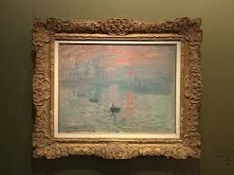

Soleil Levant
Le premier rayon fendit l'azur,
Comme un chant sacré, tendre et pur,
Son éclat fit danser les cieux,
Peignant la terre de mille feux.
Au cœur d'un souffle originel,
Le soleil naquit éternel,
Et sous ses bras de lumière vive,
Chaque âme s’éveille, chaque être s’active.
Les rayons d’opale, tendres et clairs,
Touchèrent la mer et l’univers,
Et dans l’air pur, flottait l’éclat
D’un monde neuf, sans ombre ni tracas.
La lumière, douce et radieuse,
Caressait les rivières, majestueuses,
Illuminant l’herbe encore vierge,
Des champs de cristal aux douces berges.
Les fleurs se mirent à éclore,
Dans le silence, sans effort,
Leurs pétales comme mille soleils,
Peignant la terre en mille merveilles.
La brise légère portait en son sein,
Le murmure doux des matins sereins.
Dans ce ballet, tout était uni,
Symphonie parfaite d’un jour béni.
Et l'univers, dans son éveil,
Semblait murmurer une promesse,
D’éternité, d’une douce liesse,
Où rien ne trouble la grande paix.
Le poète regardait ce spectacle grand,
Dans l’éclat pur de ce monde naissant,
Et chaque souffle de vent léger,
Chantait la promesse d’un monde enchanté.
Djamel Metref
At Yenni le 14 octobre 2024

← Tous les poèmes